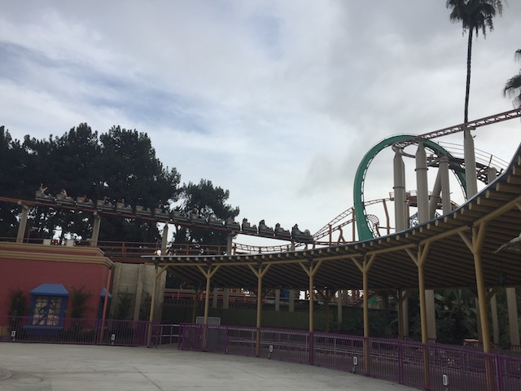
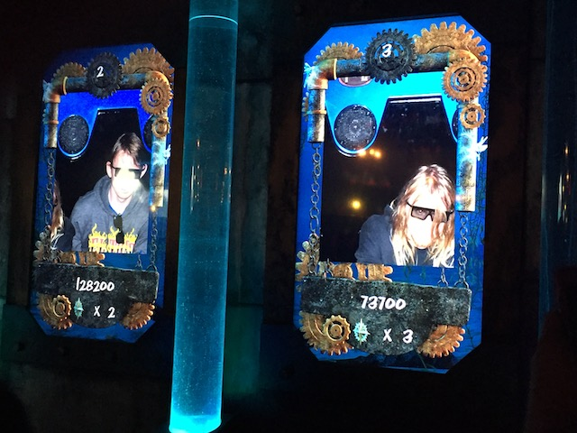

| |
Incrediblecoasters Winter 2016
Knotts Berry Farm Six Flags Magic Mountain Disneyland Resort
All right. Time for another Incrediblecoasters Update. It's Christmas Time and we're at a bunch of parks for the Holiday Season. But instead of individually posting an update for each park, it's easier to just have one massive Holiday Update, taking you all around Southern California. And of course, lets kick it off at Knotts Berry Farm.
Ooh. Pretty Christmas Decorations.
Yeah. It's a good idea to get Sierra Sidewinder out of the way first since that's a ride that tends to get long lines. Eh, it was running OK today. We spun some, but not nearly enough.
But enough of that. It's time for Logan's favorite ride ever. Silver Bullsh*t.
Truly, this is the best B&M Invert ever. ;)
Ah. They must know just how much Logan loves Silver Bullet since they gave us our very own ERT session.
I seriously can't wait for the Top Scan to come in that spot.
Take a ride on Jaguar? Sure. Why not.
Why is it that out of all the rides at Knotts Berry Farm, Jaguar gets the best themed line?

OMG! JAGUAR IS MORE FORCEFUL THAN SILVER BULLET!!! (Though seriously, it was actually running good today).
It's a shame that this is the last Shuttle Loop in the United States, because these rides are a lot of fun.
Sorry for misleading you Logan. Silver Bullet isn't the best ride ever. PONY EXPRESS IS THE BEST RIDE EVER!!!
 All right. Time to head out of the park for lunch. Ooh. Love those signs around Buena Park. They add a nice touch.
All right. Time to head out of the park for lunch. Ooh. Love those signs around Buena Park. They add a nice touch.
Hmm. The McRib is back at McDonalds. Pleasant surprise to discover that.
OK. It's been way too long in this update without doing the best coaster at Knotts (Nice new sign BTW).
That launch just kicks your ass. Gets me every single time.
 Oh, and Supreme Scream is here too. It's big. It's fun. Not sure what more to say.
Oh, and Supreme Scream is here too. It's big. It's fun. Not sure what more to say.
Oh f*ck! Logan still doesn't know the secret of Timber Mtn Log Ride.
 Yep. There it is folks! The backside of water!
Yep. There it is folks! The backside of water!
What's that? You're pissed about the backside of water joke? I DON'T CARE!!! SIT DOWN!!!
For once, I can actually enjoy all the Christmas decorations at Knotts Merry Farm because its actually Christmas time, and I'm not in the "Reject Christmas! It's January!" mood. It's really nice. =)
Love all the rerides we can get on Montezoomas Revenge.
Hey Alex! I'm doing research for that Shuttle Loop you want to build! =)
 But you're on your own when it comes to that Boomerang.
But you're on your own when it comes to that Boomerang.
 Very happy to be here for Christmas Time (Actual Christmas Time).
Very happy to be here for Christmas Time (Actual Christmas Time).
I love Top Scans. So happy that one is coming to Knotts.
 Xcelerator Rerides! They're freaking awesome! What more do I need to say!
Xcelerator Rerides! They're freaking awesome! What more do I need to say!
And of course, you gotta do Calico Mine Ride when with a newbie at Knotts.
No need to go on Grindr dude. The glory hole is right here.

Yeah. I may suck at this ride, but it's still a great dark ride.
Ooh. Look at the pretty Christmas Tree.
Well, its night time. That of course means, time for Ghostrider.
Crap. We finally found a ride we have to actually wait for.
"I don't care if it's smoother! It's not as good! I give it a 6!"
 We just had to get more rides on Silver Bullet due to just how much Logan loves it.
We just had to get more rides on Silver Bullet due to just how much Logan loves it.
Hello!! =) Hey!! Don't run past me like that assholes!!! >=(
 MORE XCELERATOR!!! AT NIGHT!!! GRR!!!
MORE XCELERATOR!!! AT NIGHT!!! GRR!!!
And that was Knotts Merry Farm. I really enjoyed everything and had a really fun day at Knotts today.
Six Flags Magic Mountain
Home
|